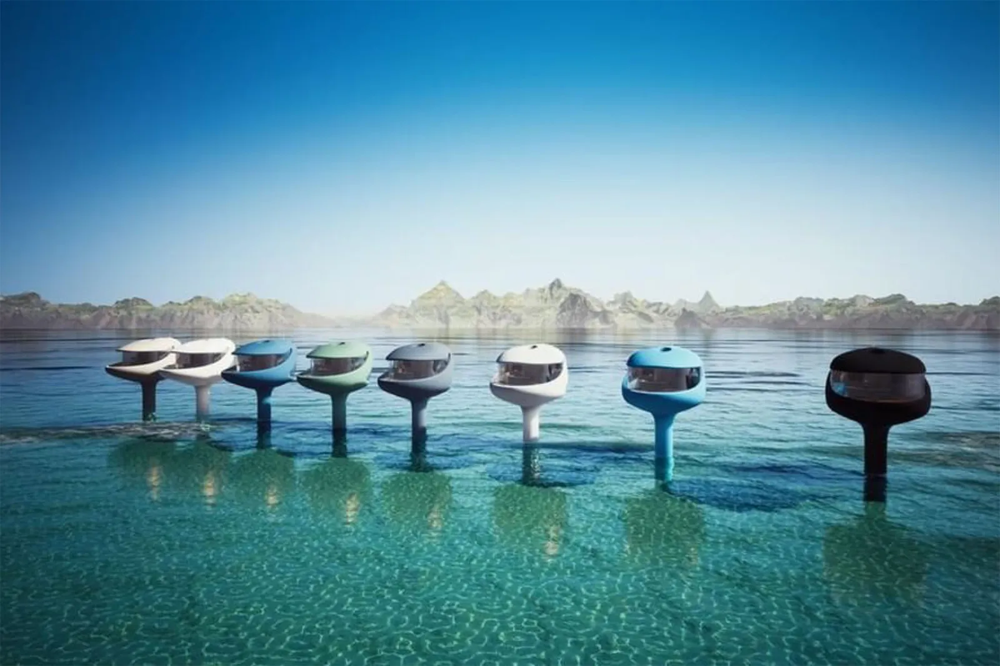
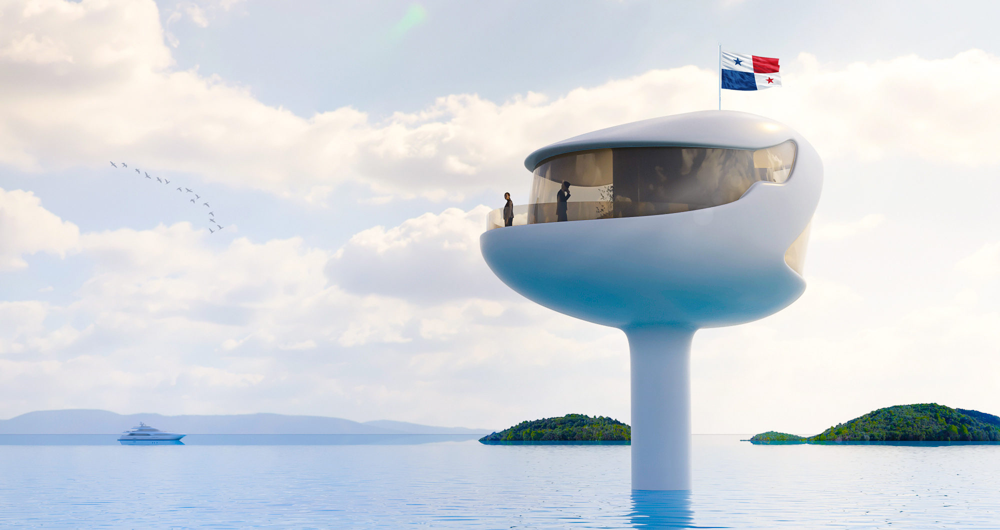

Seasteading: The movement to build floating cities on the ocean.

What is seasteading ?
Seasteading is a new movement that proposes creating floating cities on the ocean that can support almost all functionalities of a modern city. The term comes from homesteading, which means making a home for oneself in new, uninhabited places. The movement was initiated by Google software engineer Patri Friedman and author Joe Quirk in 2008.They co-founded The Seasteading Institute which is a nonprofit think-tank promoting the creation of floating ocean cities. The seasteading institute aims to nurture a community of visionaries and entrepreneurs who work on building floating ocean cities.
What do seasteads look like ?
New startup companies and individuals have come up with different designs for seasteads. There are mainly two types of floating city designs, floating cities designed to be on the high seas, out of national boundaries and floating cities designed to reside near coastal areas. A main design philosophy followed by most seasteads is modularity. This means the whole city is not built at once but the final design is achieved by assembling interconnecting modular floating platforms which are separately built. These platforms can be used as the foundation to build various buildings and other infrastructure.
How do seateads float and stay stable when the sea is rough ?
The structure of such a module in a seastead is mainly built to be strong but lightweight. Popular materials suggested to achieve this goal are reinforced concrete paired with steel and a new type of concrete known as Geopolymer concrete. One of the main characteristics that such a structure should possess is the ability to bear the weight of the buildings built on the structure and stay afloat. Also they should be able to withstand the impact of waves and stay stationary without any wobble. Many seasteads designs incorporate a component called a “spar” to provide buoyancy and stability to the structure. The spar is a hollow concrete and steel tube which is submerged and connected to the floating platform above it. Sometimes the bottom of the spar is weighted and has a larger surface area than the top. This is to take the center of gravity of the structure below its center of buoyancy. This design enables the whole structure to float on the ocean surface in a highly stable manner and significantly minimize the impact of waves. Another design suggestion that has been put forward is the creation of a breakwater ring around the seastead to minimize the activity of waves.
What about hurricanes and storms ?
A common concern that arises when thinking about ocean based living is that of storms and hurricanes. In order to address this concern various research groups have explored regions in the ocean where there are no hurricane activity all year long. Some of these areas are larger than certain continents combined. In addition to that, regions of the sea that are closer to the equator with a tropical environment have been identified to be the best environments to build seasteads.
How do seasteads get food and water ?
In order for a floating city to support the lives of people living in it, It should have a method to sustainably and continuously provide resources to the city. The seasteads have been designed to be self-sufficient as they can’t rely on land for the resources they need. That’s because it’s costly and not sustainable to import food and water. This is achieved by farming a unique ecosystem around the floating city. Algae farms are created around the seastead which acts as a food source to various types of fish and the presence of this fish attracts many other aquatic life such as oysters, mussels and shrimp. These aquatic animals can be harvested to provide food to the city. Additionally, hydroponic farms can also be used to grow crops that can only be grown on land.
Water requirements can be fulfilled by saltwater desalination which is already a well established process that is commonly utilized in cruise ships. Another interesting fact to notice about using algae to build this ecosystem is that algae are able to thrive on the waste from the city, thus creating a closed system that is beneficial both to the city and the sea ecosystem.
How do seasteads power themselves ?
There are various ways that the electricity required to power seasteads is generated. A recently explored and tested method is the use of algae to produce biofuel. It has been found that algae as biofuel production is twenty times more efficient than land based biofuel initiatives. This extracted biofuel is to be used to generate electricity. Additionally, the use of solar panels has also been proposed.
Learning should happen by bridging theorotical aspects with real-world. We constantly update our leanrning content by including current tehcnologies to make the learning process more realistic and interesting.